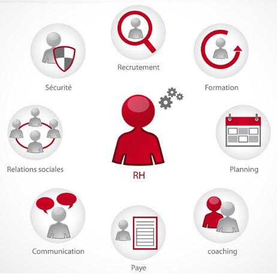
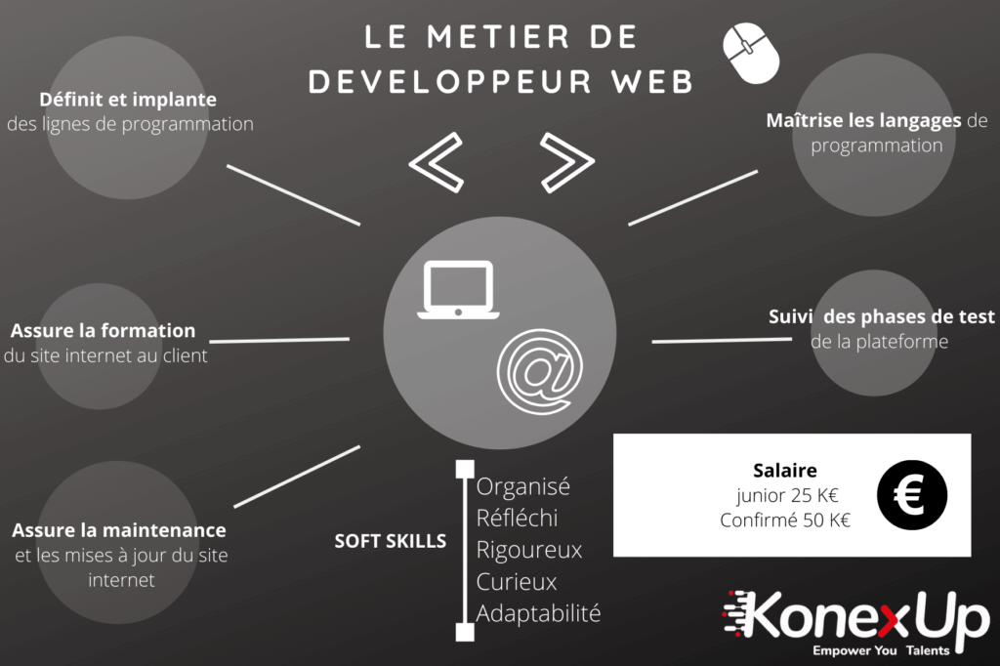

j'ai plutôt compris qu'il faut se démarquer d'autres personnes être objectif; ne pas négliger une seule fiche de paye.Il faut tout aussi être aimable avec les personnes qui nous appele(clients); pour les personnes qui feront ce métier il faudra plutôt aimer les chiffres, êtres très organisés dans son travail sous faute d'échec sur les calculs se qui m'enneras du désordre pour le futur
Ce métier est plutôt centré pour les personnes qui aime rester sur un ordinateur ou tous simplement qui aime aider des amis, le développeur est plutôt dirigé par le chef de projet; sur ce métier il est très conseiller d'être une personne plutôt être une personne organisés, réfléchis, rigoureux....
Dans ce métier il faut justement prendre les commandes, analyser tout ce que le client souhaite obtenir, il donnera les ordres au développeurs si le développeurs ne comprends pas la demande du client le chef de projet lui détaillera tout ce qu'il doit faire; si il de ne comprend toujours pas il cédera sa place au développeur confirmé qui lui a une peu plus d'expérience est si lui ne comprend toujours pas c'est qu'il y a un problème qui viendrait du client. Le chef de project peut aussi recevoir des demandes de cinquantes pages est la il detailleras bien pour que le développeurs executetras la demande du client; il se peut aussi que le chef de project ne comprennent pas se que demande le client et la il contacteras le client. Dans ce métier il faut principalement étre trés patient avec le client , le CDP (chef de project) doit aussi toucher un peut a tous en bref il faut de la créavité ,de la raisonance comprendre les demandes faites par le client...